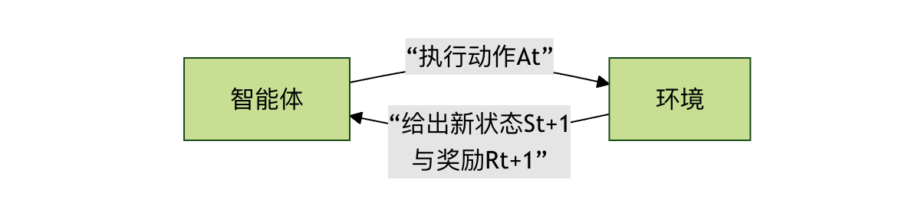
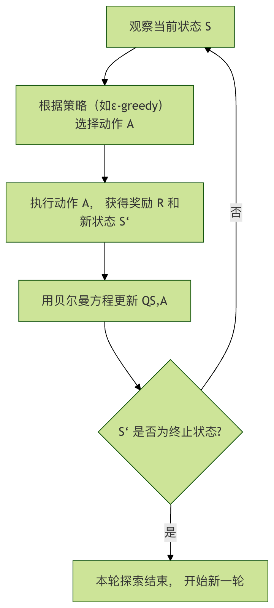

機械学習 - 強化学習の例
想像してみてください。あなたが子犬に「おすわり」という指示を教えているとします。その「おすわり」という単語の意味を直接教えるのではなく、ご褒美と罰を使って導きます。
- 子犬が偶然おすわりの動作をしたとき、すぐにご褒美のおやつを与えます（報酬）。
- 間違えたときはおやつを与えません（罰）。
何度も試行錯誤するうちに、子犬は最終的に「おすわり」という指示がおやつを得ることと関連していることを理解し、そのスキルを習得します。
強化学習とは、コンピュータ（またはエージェント）が試行錯誤のような方法で環境との相互作用を通じて、最大の累積報酬を得るために最適な意思決定を行う方法を学習する機械学習の一種です。
強化学習我々がこれまで学んできた教師あり学習（標準的な答えがある）や教師なし学習（データの内在構造を探す）とは本質的に異なります。強化学習の核心はエージェント 与 環境の継続的な相互作用にあります。
中核概念の解説
コードの詳細に入る前に、いくつかの重要な概念を理解しましょう。それらはゲームのルールのようなもので、強化学習の世界がどのように機能するかを定義します。
-
エージェント：エージェントとは、学習者または意思決定者です。上のたとえでは、それは子犬です。プログラムでは、環境を観察し、行動を行い、結果から学習するアルゴリズムです。
-
環境：環境とは、エージェントが置かれている外部の世界です。エージェントの行動を受け取り、新しい環境状態と、その行動による即時報酬の2つのフィードバックを返します。
-
状態：状態とは、ある時点における環境の具体的な状況の記述です。例えば、迷路を進むゲームでは、状態はエージェントが現在いる位置の座標です。
-
行動：行動とは、エージェントがある状態で選択できる選択肢のことです。例えば、迷路では、上、下、左、右という行動があります。
-
報酬：報酬とは、環境がエージェントの行動に対して直接与える評価信号であり、通常は数値です。正の報酬は励ましを表し、負の報酬は罰を表します。エージェントの究極の目標は、開始から終了までに得られる総報酬（累積報酬）。
-
方策：方策とは、エージェントの行動規範であり、可能な各状態でどの行動を選択すべきかを定義します。学習のプロセスは、本質的にこの方策を最適化するプロセスです。
これらの概念がどのように連携して機能するかをより直感的に理解するために、強化学習の基本的な相互作用のフローを見てみましょう。

このループは、終端状態（ゲームクリアや失敗など）に達するまで続きます。
古典的な問題：クリフウォーキング
理論を実践に移すために、古典的な強化学習のサンプル環境を使用します。CliffWalking-v0（クリフウォーキング）。これはgymnasiumライブラリ（元のOpenAI Gymのメンテナンスブランチ）に由来します。
環境の説明
- シナリオ：4x12のグリッド世界。
- 開始地点：左下隅（座標 [3, 0]）。
- 終点：右下隅（座標 [3, 11]）。
- 崖：最下部の行のうち、開始地点と終点を除くすべての位置（[3, 1] から [3, 10]）です。崖に落ちると大きな罰を受け、開始地点に戻されます。
- 目標：エージェントは開始地点から終点まで安全に移動し、崖に落ちないようにする必要があります。
- 行動：上（0）、右（1）、下（2）、左（3）。
- 報酬：
- 通常のグリッドを1歩進むごとに：-1（より少ないステップで到達することを促す）
- 崖に落ちる：-100、および開始地点に戻される
- 終点に到達する：0、および今回の試行を終了する
アルゴリズム紹介：Q-Learning
私たちはQ-Learningアルゴリズムを使ってこの問題を解決します。これはモデルフリーの強化学習アルゴリズムであり、エージェントが環境の動作ルール（状態遷移確率など）を事前に知る必要がなく、試行錯誤を通じて学習することを意味します。
その中核となるのは、Qテーブルと呼ばれるテーブルです。
- 行すべての可能な状態を表します。
- 列すべての可能な行動を表します。
- セルの値（Q値）は、ある状態である行動を取った場合の長期的な期待収益を表します。
Q-Learningの学習プロセスは次のステップに要約できます。これは、エージェントが一回の経験を通じて自分の知識（Qテーブル）をどのように更新するかを示しています。

核心の公式：ベルマン方程式
Qテーブル更新の数学的基礎はベルマン方程式であり、その更新式は以下の通りです：
\[ Q(S, A) \leftarrow Q(S, A) + \alpha [R + \gamma \max_{a} Q(S', a) - Q(S, A)] \]
この式の各部分を分解してみましょう。
| 記号 | 意味 | 類推による説明 |
|---|---|---|
| \( Q(S, A) \) | 状態Sにおける行動Aの元のQ値 | あなたが以前、交差点で直進するという判断に対して付けた古い評価 |
| \(\alpha \) | 学習率 (0 < α ≤ 1) | あなたが今回の新しい経験をどの程度信頼するか。α=1は新しい経験で古い認識を完全に上書きすることを意味し、α=0.1は新しい経験が古い認識をわずかに修正するだけであることを意味します。 |
| \(R \) | 行動Aを実行した後に得られる即時報酬 | 直進した後、道路が空いていることに気づき、小さな正のフィードバック（+1）を得た |
| \(\gamma \) | 割引率 (0 ≤ γ < 1) | あなたが将来の報酬をどれほど重視するか。γ=0は目の前の報酬だけを気にすることを意味し、γ=0.9は長期的な利益を非常に重視することを意味します。 |
| \(\max_{a} Q(S', a) \) | 新しい状態S'における、すべての可能な行動の中での最大Q値 | 新しい交差点に着いた後、左折、右折、直進のどれが将来の収益が最も高いかを評価する |
| \(R + \gamma \max_{a} Q(S', a)\) | 目標Q値であり、現在の判断に対する新しくより良い推定を表します。 | 即時報酬と将来の最良の収益を組み合わせて、以前の交差点で直進するという判断に対する新しい評価を導き出します。 |
| \(R + \gamma \max_{a} Q(S', a) - Q(S, A)\) | TD誤差（時間差分誤差）であり、新旧の認識の差です。 | 新しい評価と古い評価の差であり、この差が学習を促進します。 |
簡単に言うと、この式はエージェントに即時報酬 + 将来の最良推定の割引を用いて、現在の判断の価値に対する自分の評価を継続的に修正させます。
実践：Q-Learningエージェントの作成
では、クリフウォーキング問題を解決するQ-Learningエージェントをコードで実装しましょう。
ステップ1：ライブラリのインストールとインポート
まず、必要なライブラリがインストールされていることを確認してください。ターミナルまたはコマンドラインで次を実行します：
サンプル
次に、Pythonファイルでそれらをインポートします：
サンプル
import numpy as np
import random
ステップ2：環境とQテーブルの初期化
サンプル
env = gym.make("CliffWalking-v0", render_mode="human") # render_mode="human" は可視化用
# 2. 環境情報を取得
n_states = env.observation_space.n # 状態の総数 (4*12=48)
n_actions = env.action_space.n # 行動の総数 (4方向)
# 3. Qテーブルを初期化。形状は [状態数, 行動数]、初期値はすべて0
Q_table = np.zeros((n_states, n_actions))
print(f"環境状態数: {n_states}, 行動数: {n_actions}")
print(f"Qテーブルの形状: {Q_table.shape}")
ステップ3：ハイパーパラメータの設定
ハイパーパラメータはアルゴリズムの動作を制御するつまみであり、問題に応じて調整する必要があります。
サンプル
alpha = 0.1 # 学習率：新しい情報の影響の程度
gamma = 0.99 # 割引率：将来の報酬の重要性
epsilon = 0.1 # 探索率：どの程度の確率でランダム探索を行うか（既知の最適を選ぶのではなく）
num_episodes = 500 # 訓練エピソード数（エージェントがゲームをプレイする回数）
ステップ4：ε-greedy方策の実装
これはエージェントが意思決定を行う中核的な方策であり、次の2つをバランスさせます探索 和 活用。
- 探索：ランダムに行動を選択し、より良い方策を発見する可能性を探ります。
- 活用：現在のQテーブルが最適と考える行動を選択し、最大の利益を得ます。
サンプル
"""
ε-greedy方策に従って行動を選択します。
パラメータ:
state: 現在の状態
Q_table: Q値テーブル
epsilon: 探索確率
戻り値:
action: 選択する行動 (0, 1, 2, 3)
"""
# 0〜1の乱数を生成
if random.uniform(0, 1) < epsilon:
# 探索：ランダムに行動を選択
action = env.action_space.sample()
else:
# 活用：現在の状態でQ値が最大の行動を選択
# np.argmax は最大値のインデックス、つまり最適な行動を返す
action = np.argmax(Q_table[state])
return action
ステップ5：メインのトレーニングループ
これはアルゴリズムが学習する主要なプロセスです。
サンプル
reward_history = []
for episode in range(num_episodes):
# 環境をリセットし、初期状態を取得
state, _ = env.reset()
total_reward = 0 # 今回のエピソードの累積報酬
terminated = False # 終了状態（ゴール/崖）に到達したかどうか
truncated = False # ステップ数超過で終了したかどうか（この環境では通常発生しない）
# ゲームが終了するまで、このエピソードの対話ループを続行
while not (terminated or truncated):
# 1. 行動を選択
action = choose_action(state, Q_table, epsilon)
# 2. 行動を実行し、環境からのフィードバックを取得
next_state, reward, terminated, truncated, _ = env.step(action)
# 3. Qテーブルを更新（Q-Learningの中核となる更新式）
# 現在のQ値を取得
current_q = Q_table[state, action]
# 目標Q値を計算：即時報酬 + 将来の最大Q値の割引
# 注意：次の状態が終了状態の場合、将来のQ値はない
if terminated:
target_q = reward
else:
target_q = reward + gamma * np.max(Q_table[next_state])
# ベルマン方程式を適用してQ値を更新
Q_table[state, action] = current_q + alpha * (target_q - current_q)
# 4. 次の状態へ移り、報酬を累積する
state = next_state
total_reward += reward
# 今回のエピソードの総報酬を記録
reward_history.append(total_reward)
# 100エピソードごとに進捗を出力
if (episode + 1) % 100 == 0:
avg_reward = np.mean(reward_history[-100:]) # 直近100エピソードの平均報酬
print(f"エピソード {episode + 1}, 直近100エピソードの平均報酬: {avg_reward:.2f}")
# 訓練終了、環境をクローズ
env.close()
ステップ6：学習済みエージェントのテスト
訓練が完了したら、探索をオフにし、エージェントに学習した知識（Qテーブル）だけを利用させて一通り行動させ、そのパフォーマンスを確認します。
サンプル
# 新しいテスト環境を作成（render_modeを付けないか、"human"に変更して観覧することも可能）
test_env = gym.make("CliffWalking-v0", render_mode="human")
state, _ = test_env.reset()
test_terminated = False
test_truncated = False
step_count = 0
while not (test_terminated or test_truncated):
# テスト時はepsilon=0に設定、すなわち完全に活用のみで探索しない
action = choose_action(state, Q_table, epsilon=0)
state, reward, test_terminated, test_truncated, _ = test_env.step(action)
step_count += 1
print(f"ステップ {step_count}: 状態 {state}, 行動 {action}, 報酬 {reward}")
print(f"テスト完了！総ステップ数: {step_count}, 総報酬: {reward} (ゴール到達時の報酬は0)")
test_env.close()
実行結果と分析
完全なコード：
サンプル
import numpy as np
import random
# =========================
# 1. 環境を作成
# =========================
env = gym.make("CliffWalking-v0", render_mode="human")
# =========================
# 2. 環境情報を取得
# =========================
n_states = env.observation_space.n
n_actions = env.action_space.n
# =========================
# 3. Qテーブルを初期化
# =========================
Q_table = np.zeros((n_states, n_actions))
print(f"環境の状態数: {n_states}")
print(f"行動数: {n_actions}")
print(f"Qテーブルの形状: {Q_table.shape}")
# =========================
# 4. ハイパーパラメータを設定
# =========================
alpha = 0.1
gamma = 0.99
epsilon = 0.1
num_episodes = 500
# =========================
# 5. ε-greedy方策
# =========================
def choose_action(state, Q_table, epsilon):
if random.uniform(0, 1) < epsilon:
return env.action_space.sample()
return np.argmax(Q_table[state])
# =========================
# 6. 訓練ループ
# =========================
reward_history = []
for episode in range(num_episodes):
state, _ = env.reset()
total_reward = 0
terminated = False
truncated = False
while not (terminated or truncated):
action = choose_action(state, Q_table, epsilon)
next_state, reward, terminated, truncated, _ = env.step(action)
current_q = Q_table[state, action]
if terminated:
target_q = reward
else:
target_q = reward + gamma * np.max(Q_table[next_state])
Q_table[state, action] = current_q + alpha * (target_q - current_q)
state = next_state
total_reward += reward
reward_history.append(total_reward)
if (episode + 1) % 100 == 0:
avg_reward = np.mean(reward_history[-100:])
print(f"エピソード {episode + 1}、直近100エピソードの平均報酬: {avg_reward:.2f}")
env.close()
# =========================
# 7. 訓練結果をテスト
# =========================
print("\n=== テスト開始 ===")
test_env = gym.make("CliffWalking-v0", render_mode="human")
state, _ = test_env.reset()
terminated = False
truncated = False
step_count = 0
total_reward = 0
while not (terminated or truncated):
action = choose_action(state, Q_table, epsilon=0)
state, reward, terminated, truncated, _ = test_env.step(action)
step_count += 1
total_reward += reward
print(f"ステップ {step_count}: 状態 {state}, 行動 {action}, 報酬 {reward}")
print(f"テスト完了、総ステップ数: {step_count}、総報酬: {total_reward}")
test_env.close()
上記の完全なコードを実行すると、非常に直感的な2つの現象が確認できます：訓練段階での報酬の変化と、テスト段階でのエージェントの実際の行動経路です。
1. トレーニング段階：報酬が徐々に向上
訓練中、コンソールには100エピソードごとに直近100エピソードの平均報酬が出力されます。例：
轮次 100, 最近100轮平均奖励: -120.45 轮次 200, 最近100轮平均奖励: -65.32 轮次 300, 最近100轮平均奖励: -32.18 轮次 400, 最近100轮平均奖励: -18.06 轮次 500, 最近100轮平均奖励: -13.94
明らかな傾向が見られます：平均報酬が上昇し続ける（負の値の絶対値が小さくなる）。
これは何を意味するのでしょうか？
- 訓練初期では、エージェントは頻繁に崖に落ち、大量の
-100のペナルティを受けます。 - 訓練が進むにつれて、Qテーブルは「どの経路が危険で、どの経路が安全か」を徐々に学習します。
- エージェントは崖を積極的に避け、より長いもののペナルティがより小さい安全な経路を選ぶようになります。
報酬の向上は、本質的に方策の質の向上を反映しています。
2. テスト段階：エージェントの動作の様子
テスト段階では、我々はepsilonを0に設定します。つまり：
- もはやランダム探索は行いません
- Qテーブルで学習した最適方策に完全に従って行動します
もしあなたがrender_mode="human"を有効にすると、非常に典型的な行動が見られます：
- エージェントはスタート地点から出発し
- 崖の上1マスの位置に沿って水平に移動し
- ゴールに近づいたら下へ移動し、安全にゴールへ到達します
これはまさにCliffWalking環境で最適とされる最適方策です：
- 最短経路（崖に沿った道）ではなく
- むしろ期待ペナルティが最小の経路です
これは強化学習の中核的な特徴を示しています：それが追求するのは長期的な累積報酬であり、短期的な最適性ではありません。
3. なぜ遠回りを学び、危険な直進をしないのか？
これは非常に重要で、かつ非常に古典的な問題です。
人間の直感から見れば、崖に沿って進むのが最短経路ですが、エージェントにとっては：
- 一度でも間違えたら、即座に
-100の大きなペナルティを受けます - 一方、数歩多く歩くだけで、いくつかの
-1
ベルマン方程式の累積効果の下では：
安定した小さな損失 < 偶発的な大災害
したがって、Q-Learningはより保守的でありながら、全体的な期待報酬がより高い方策へ自然に収束します。
よくある質問とパラメータの影響
1. 学習率αが大きすぎたり小さすぎたりするとどうなる？
- αが大きすぎる場合：学習プロセスが振動し、方策が不安定になり、既存の経験を繰り返し覆しやすい
- αが小さすぎる場合：学習が非常に遅く、収束するまでに大量のエピソードが必要になる
この例では、0.1は比較的安定した選択肢です。
2. 割引率γの直感的な意味
γ → 0：エージェントは目先の報酬しか気にせず、短視的になりやすいγ → 1：エージェントは長期的な結果を非常に重視し、より先見性のあるプランナーのようになる
崖の経路探索問題では、大きなγは、今1歩多く歩くことが将来のより大きな損失を避けるためだとエージェントに認識させるのに役立ちます。
3. εの本質的な役割
εエージェントの性格を決定します：
- εが大きい → 冒険好きで探索が多い
- εが小さい → 保守的で、既存の経験をより多く活用する
実際のプロジェクトでは、通常ε減衰戦略を使用します：
- 前期は多くの探索を行い
- 後期は徐々に安定した方策へ収束します
本サンプルの限界と拡張の方向性
Q-Learningは非常に古典的ですが、明らかな制限もあります：
- Qテーブルのサイズは状態空間に比例して線形に増加する
- 連続状態（実世界の物理など）を直接処理できない
- 複雑な環境では収束速度が遅い
これが、より複雑な問題では以下のものを導入する理由です：
- Deep Q-Network（DQN）
- Policy Gradient
- Actor-Critic
それらはニューラルネットワークでQテーブルを置き換え、強化学習をゲーム、ロボット制御、自動運転などの実世界のシーンに応用できるようにします。
まとめ
この完全な強化学習のサンプルを通じて、あなたは以下のことを達成しました：
- 強化学習と教師あり/教師なし学習の根本的な違いを理解しました
- エージェント、環境、状態、行動、報酬、方策の完全なループを習得しました
- 実行可能で、観察可能で、収束するQ-Learningエージェントを自らの手で実装しました
- 長期的な報酬の最大化という強化学習の中核的な考え方を理解しました
クリックしてノートを共有
<p style="font-size:14px;">ノートは本記事の内容を拡張したものである必要があります！</p><br> <p style="font-size:12px;"><a href="../tougao.html" target="_blank">記事投稿は、ここをクリック</a></p> <p style="font-size:14px;"><a href="../w3cnote/runoob-user-test-intro.html" target="_blank">登録招待コードの取得方法</a></p> <h3 class="text-muted"><i class="fa fa-info-circle" aria-hidden="true"></i> ノートを共有する前に必ず<a href=";.html" class="runoob-pop">ログイン</a>！</h3> <p><a href="../w3cnote/runoob-user-test-intro.html" target="_blank">登録招待コードの取得方法</a></p>